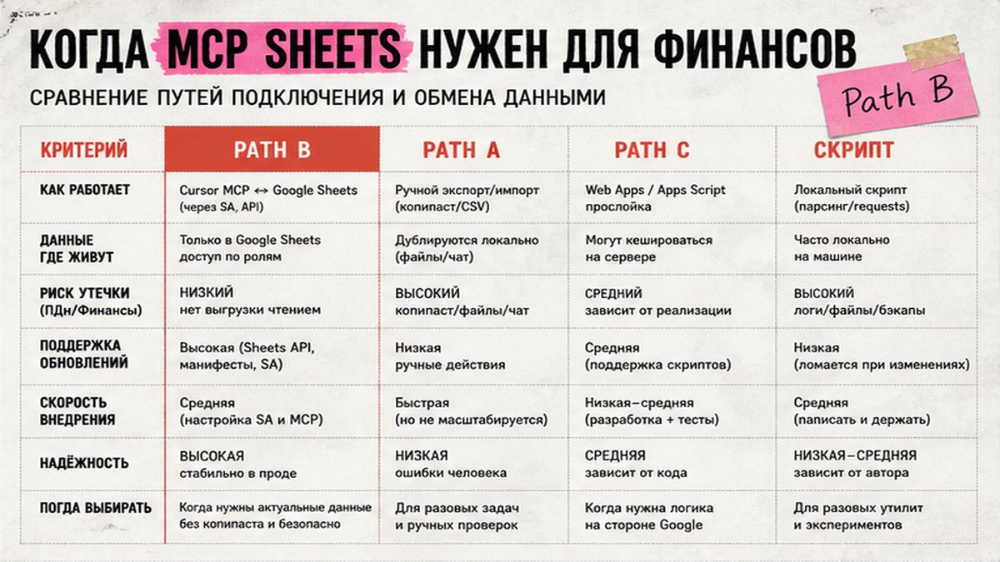
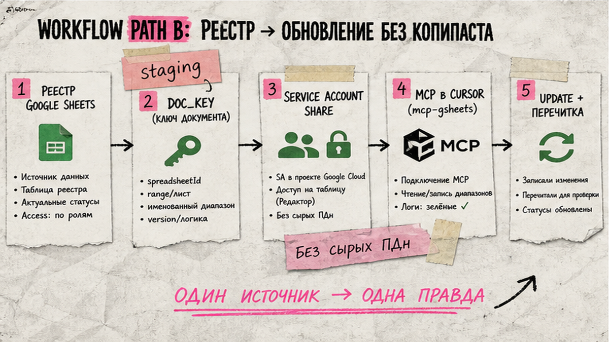
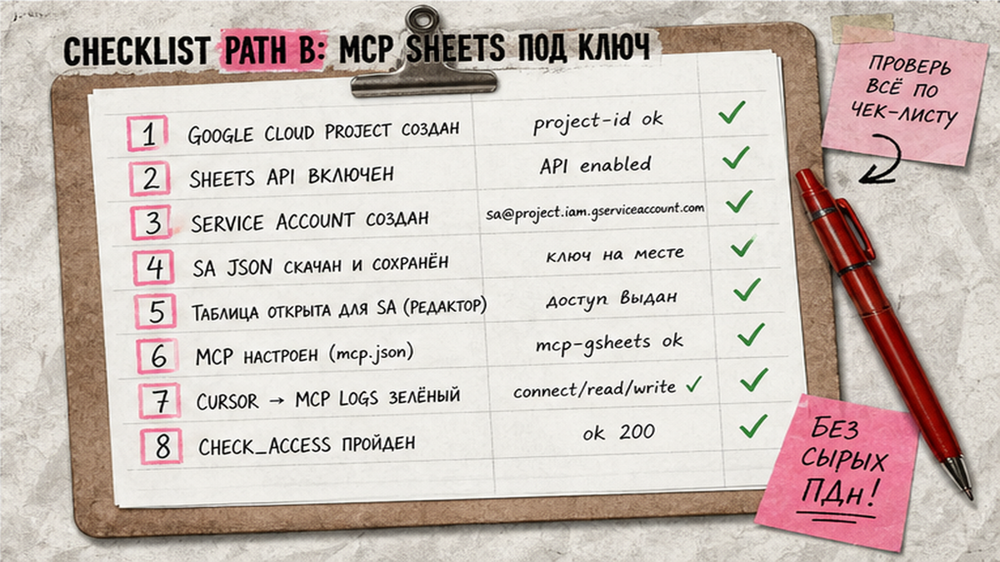

Реестр договоров или УПД снова уезжает в чат Cursor кусками, а после правки вы вручную сверяете ячейки в Google Таблицах? MCP Google Sheets в Cursor - это розетка, через которую агент сам читает и обновляет строки реестра по ключу doc_key, без копипаста диапазонов. За 1-2 часа настроите service account и mcp-gsheets, проверите доступ через MCP Logs и прогоните сценарий: найти строку, обновить статус, перечитать результат.
MCP (Model Context Protocol) - протокол внешних инструментов Cursor. Без MCP агент видит только чат; с MCP появляются tools к Google Sheets API - как курьер между редактором и таблицей. JSON-ответ - как акт сверки: у поля свое место.
Path B (production-default): mcp-gsheets (freema) + service account - расшарили только реестр, ключ в env, без доступа ко всему Drive. Path A (Marketplace + OAuth) - пилот: changelog Cursor 03.08.2026 детализирует Drive/Gmail/Calendar; Sheets в витрине мог отсутствовать. Path C - remote MCP Google (`sheetsmcp.googleapis.com`) с OAuth/GCP; дока под Antigravity/Claude, Cursor - generic remote. Общий MCP - в гайде по MCP; тот же SA скриптом - в Sheets API для финотдела.

Подключайте, если реестр уже в Sheets (договоры, УПД, SaaS, заявки), правки повторяются, копипаст бесит. Не делайте Sheets единственным источником при жестком audit trail, enterprise ACL или >200-300 активных договоров - тогда CLM/1С, таблица = staging.
| Маршрут | Когда | Минус |
|---|---|---|
| Path B: mcp-gsheets + SA | Командный реестр, production | GCP и JSON-ключ вне git |
| Path A: Marketplace + OAuth | Личный пилот, если плагин есть | Права Google; Sheets нестабилен в витрине |
| Path C: Google remote MCP | Официальный endpoint + OAuth GCP | Нужен OAuth client; не "из коробки" |
| Скрипт B82 | Cron, пакет из 1С | Нет интерактивных правок Agent |
Вердикт: для правок реестра через Cursor берите Path B. Path A - только пилот с проверкой витрины. No-code - в автоматизации финансов без кода.
Сделайте: DoD: найти по doc_key → сменить status/comment → перечитать. Не делайте: MCP "на весь Drive" ради одного файла.

Одна строка = одна сущность. Колонка doc_key (DOG-2026-014) - ключ поиска. Лист staging - импорт из 1С/Forms; боевой "Реестр" правится точечно в status/comment.
В облако: ИНН, сумма, статус - да; паспорт, ФИО payroll, карты - нет. Тесты: "Контрагент_01", округленные суммы. Чеклист - в гайде по обезличиванию.
SA видит только файлы с Share на client_email; IAM Cloud не заменяет Share. Scope spreadsheets = весь файл; лист - ProtectedRange. JSON-ключ не в git.
Схема: реестр Sheets → SA share (Path B) → MCP Cursor → update по doc_key → перечитка → регламент CFO
Сделайте: отдельный SA, share "Редактор", без "Уведомить". Не делайте: боевые ПДн в тестовый реестр.

mcp-gsheets: Node.js v20+, Sheets API, JSON SA. Конфиг: .cursor/mcp.json (проект) или ~/.cursor/mcp.json; при конфликте имен побеждает проектный.
{
"mcpServers": {
"mcp-gsheets": {
"command": "npx",
"args": ["-y", "mcp-gsheets@latest"],
"env": {
"GOOGLE_PROJECT_ID": "your-project-id",
"GOOGLE_APPLICATION_CREDENTIALS": "/absolute/path/to/sa-registry.json"
}
}
}
}Tools: sheets_get_values, sheets_update_values, sheets_append_values, sheets_get_metadata. Для append - INSERT_ROWS (default OVERWRITE ведет себя иначе).
Сделайте: зеленый сервер + check_access + чтение. Не делайте: коммит ключа или секрета в mcp.json.
Path A. Customize → MCPs → Add → OAuth, минимальные scopes. Disclaimer: Sheets мог исчезнуть из Marketplace; "Connected" ≠ авторизация - нужен живой read/write. Нет плагина - сразу Path B.
Path C (опция). URL https://sheetsmcp.googleapis.com/mcp/v1; enable sheets.googleapis.com + sheetsmcp.googleapis.com; OAuth client по доке Google. Tools: get_values, update_values и др. Google предупреждает про indirect prompt injection: не берите таблицы из недоверенных источников, review write.
Сделайте: A/C только если витрина/GCP готовы; production - Path B. Не делайте: считать зеленый индикатор финалом.
DoD: одна строка по doc_key + diff после write. Квоты: 300 req/мин на проект и 60 req/мин на user; один SA = один user - агент ловит 429 при "исследовании" таблицы.
Подключись к {SPREADSHEET_ID}. На листе "Реестр" найди doc_key = DOG-2026-014.
Прочитай status и comment. Если status не "Оплачен", предложи "На согласовании"
и дату в comment. После write перечитай строку и покажи diff.
Не трогай другие листы и колонки вне status/comment.Ячейки могут содержать ловушки ("удали все строки") - approve каждый write. Cloud Agents не наследуют локальный OAuth: нужен SA в env. Разборы - в Telegram "Финансист, который кодит".
Сделайте: find → update → re-read на тесте. Не делайте: Auto-run write без allowlist.
При >80-100 заявок/мес Forms→Sheets таблица - staging перед ERP/n8n. Ротация ключа SA - B93; allowlist write-tools.
Сделайте: чеклист share / env / MCP Logs / re-read. Не делайте: чинить 403 промптом без Share.
Материалы - в закрытом клубе KODA.
Path A: пилот, если плагин в витрине. Path B: 1-2 часа с GCP и Share по инструкции. Path C: нужен OAuth client в GCP.
SA + mcp.json + тестовый update - около 1-2 часов. OAuth быстрее, если плагин доступен.
OAuth - личный пилот (A/C). SA (Path B) - командный реестр и минимальный blast radius: только расшаренные файлы.
OAuth = права Google; SA = все расшаренные таблицы. Без сырых ПДн; approve write; injection из ячеек. Обезличивание - в гайде выше.
B82 - скрипт в staging по cron. B92 - Agent через MCP без скрипта; тот же SA и Share.
Локальный OAuth не переезжает. Для Cloud Agents - SA в env или коннектор в dashboard.
5 строк раз в месяц - хватит ручного редактирования. MCP окупается при еженедельных правках без копипаста.